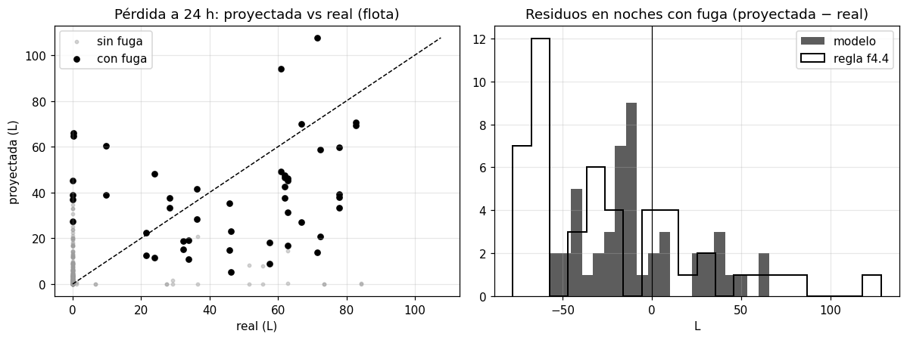
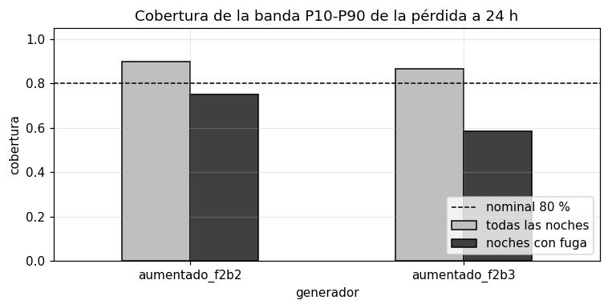
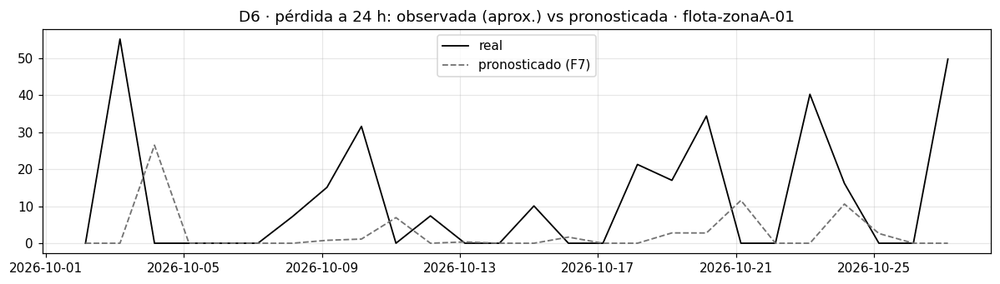
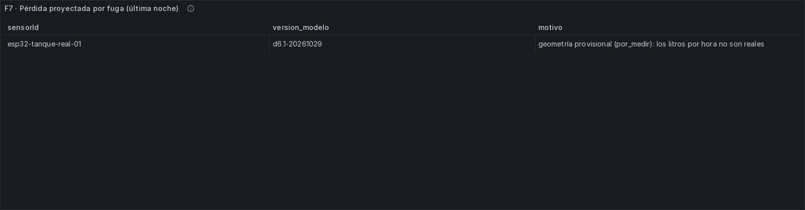
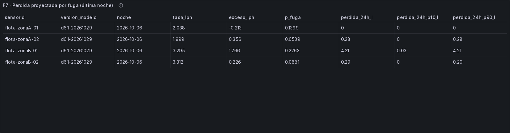
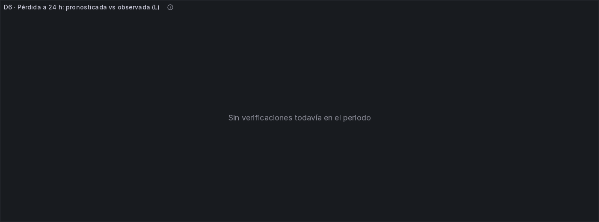

Modelo D6: pérdida proyectada por fuga¶
Dimensión D6 (Joel Huillca). Versión d6.1, entrenada el 2026-10-29 con la partición p6.2.
Gráficos y evidencia: al final de la página, en Gráficos del notebook y del tablero en vivo.
- Código:
batch/modelo_d6.py(configuración enbatch/modelo_d6.yml) ybatch/fuga.py, el modelo, sin dependencias fuera de numpy, para F7. - Modelo guardado:
batch/modelos/d6/d6.1-20261029/(modelo.jsonymanifiesto.json). - Evidencia:
docs/evidencias/f6-d6/. - Plantilla:
docs/modelo-d2.mdydocs/modelo-d4.md, con las mismas reglas de evaluación.
Qué se puede afirmar y qué no. No hay ninguna fuga real etiquetada. Todas las cifras de detección y de litros salen de la flota aumentada, donde el generador crea las fugas que el modelo aprende a detectar: son consistencia (el modelo reconoce las fugas tal como el generador las define), no rendimiento real. En los tanques reales de ThingSpeak, que no tienen etiquetas, la línea base "cero fuga" gana. La primera evidencia real será la fuga controlada de la prueba en vivo con el ESP32 (sección 8).
1. Qué pregunta responde y qué decisión habilita¶
¿Este tanque está perdiendo agua por una fuga? Si es así, ¿a cuántos litros por hora, y cuánta agua se perderá en las próximas 24 horas y en los próximos 7 días si nadie hace nada?
Con la respuesta, la familia o el administrador pueden decidir:
- si conviene revisar el flotador, las uniones o la llave del tanque, antes de que la pérdida crezca;
- cuánta agua cuesta no arreglarlo, en litros a 24 h y a 7 días, con un rango creíble;
- y, junto con D2 (autonomía), si la fuga acorta las horas de agua que quedan.
2. Datos¶
| Nivel | Qué datos | Etiquetas de fuga | Para qué |
|---|---|---|---|
| Flota f2b.2 | 24 corridas del generador, 4 tanques × 30 noches cada una: 12 semillas para entrenar y 12 distintas para evaluar (modelo_d6.yml). El sensor no compensa la temperatura; la compensa el detector |
Sí: episodios fuga_lenta de 1-4 días a 1.5-4 L/h, con la tasa real |
Entrenar y medir consistencia |
| Flota f2b.3 | Igual, pero el firmware compensa con un DHT11 de ±2 °C redondeado a grados enteros, como el ESP32 real | Sí | Lo mismo, con un sensor como el real |
| ThingSpeak real | Tanques 1233810, 1233815, 283977 y 480876 (nivel en %) | No | El ingrediente observable: el descenso nocturno |
| ESP32 | El tanque del equipo | Pendiente (fuga controlada) | La métrica final, cuando exista la prueba real |
Base común: la tabla oro d6_noches. Cada noche se arma con la misma función de la capa oro (batch/oro.py →
d6) sobre la distancia de la capa plata. Esa distancia ya respeta dos cosas:
compensacion_en_firmware: la distancia del ESP32 no se compensa dos veces.- El sensor vigente en cada periodo: HC-SR04 o JSN-SR04T, cada uno con su rango válido (
ingesta/tanques.yml→sensorModelo).
Una noche con dos sensores, o con compensación desconocida, no se usa.
Por qué varias corridas por modelo de generador y no solo la de la tabla oro:
- La tabla oro tiene una corrida de f2b.2 (semilla 7), y en su partición de consistencia solo hay 2 noches con fuga. Con eso no se puede medir nada.
- Las demás semillas se reconstruyen con el mismo código.
- Entrenamiento y evaluación usan semillas disjuntas. El modelo se entrena y se ajusta solo con la partición
entrenamientode 12 semillas, y se evalúa solo con la particiónconsistenciade otras 12, las mismas para f2b.2 y f2b.3. Una primera versión usaba las mismas semillas para las dos cosas, separadas solo en el tiempo, y eso tenía dos fugas de información: - En el tiempo: 8 de 32 episodios de la evaluación cruzaban el día de embargo, y 2 tenían noches en el entrenamiento.
- Entre generadores: f2b.2 y f2b.3 con la misma semilla generan las mismas fugas (solo cambia el sensor).
- Control: la reconstrucción de la semilla 7 reproduce la tabla oro exactamente (120 de 120 noches, diferencia máxima 0.0 cm, mismas etiquetas).
ThingSpeak no está en d6_noches porque esos canales informan el nivel en %, no la distancia. Para ellos el
modelo usa el nivel directamente.
3. Cómo se estima la tasa y la pérdida¶
Franja nocturna: 00:00 a 03:30 (Lima).
- Es la misma de
d6_nochesy de la reglaalerta_fugacongelada. - Es la de menor consumo (pesos 0.1-0.2 del perfil horario) y termina antes de la franja de llegada más temprana.
Noche válida. Debe cumplir tres condiciones:
- al menos 60 % de los minutos con lectura;
- ningún llenado en la franja ni en la hora anterior;
- un solo sensor, con la compensación conocida.
El llenado se detecta cuando la mediana de 15 min sube más de 2 puntos sobre el mínimo de los 30 min previos. No se
usa hubo_subida de la tabla oro (una subida de más de 2 % entre dos lecturas seguidas): los saltos del sensor
(2-6 cm en el 1.9 % de las lecturas) la disparan en 116 de 120 noches de la flota.
Pasos de la estimación:
- Tasa de la noche (cm/h): la pendiente de Theil-Sen, que es la mediana de todas las pendientes entre pares de puntos, de las medianas por minuto de la distancia.
- Por qué Theil-Sen y no "últimos 15 min − primeros 15 min" (lo que usa
alerta_fuga): la diferencia de dos extremos depende de dos ventanas cortas, y un eco o un salto en una de ellas la arrastra. Theil-Sen usa toda la franja y tolera hasta ~29 % de puntos malos. - En L/h: se multiplica por la capacidad del tanque entre su altura (litros por cm).
- Referencia del tanque (L/h): la mediana de sus 7 noches válidas anteriores, con un mínimo de 3. Es el consumo nocturno normal: de noche también se usa algo de agua.
- Exceso (L/h) = tasa − referencia. Es lo que una fuga añade a lo normal.
- Probabilidad de fuga esta noche: sale del clasificador (sección 4).
- Pérdida proyectada a H horas (L) = P(fuga) · max(exceso, 0) · H · f_H.
- f_H es el factor de persistencia, aprendido en el conjunto de ajuste: qué fracción de esa pérdida ocurrió de verdad.
- Por qué hace falta: una fuga no dura para siempre (se repara, o el flotador se asienta), y suponer que sigue sobreestima. Sale f₂₄ = 0.61 y f₁₆₈ = 0.23: en la flota, de lo que una fuga perdería en 7 días si siguiera igual, solo ocurre ~1/4.
- Banda P10-P90: predicción conforme sobre el conjunto de ajuste, por separado para las noches que el modelo marca como fuga y para las demás (conforme de Mondrian).
- Por qué separadas: con una sola banda, los residuos de las noches normales, casi todos 0, la dejaban de ancho 0 y no cubría las fugas (3-13 % de cobertura en las noches con fuga).
La verdad en la flota: la tasa real del generador (fuga_lph), la media en la franja, y la pérdida real por
fuga en las 24 h y 7 días siguientes al fin de la franja.
4. Los modelos¶
Modelo principal: tasa robusta + regresión logística¶
La regresión logística (IRLS con penalización L2, clases equilibradas) da P(fuga esta noche) con siete variables:
| Variable | Qué mide | Coeficiente (estandarizado) |
|---|---|---|
exceso_lph |
exceso de esta noche | +2.22 |
estabilidad_lph |
desviación de la tasa en las 5 noches anteriores | +1.15 |
log_horas_llenado |
horas desde el último llenado (log) | +0.40 |
dT_dht_c |
enfriamiento del aire en la franja (DHT11) | +0.33 |
exceso_prev_lph |
exceso de la noche anterior (una fuga sigue) | +0.32 |
ruido_cm |
dispersión de los minutos alrededor de la recta | +0.12 |
dT_juliaca_c |
enfriamiento en Juliaca (Open-Meteo) | +0.06 |
Umbral: P ≥ 0.70. Se eligió en el conjunto de ajuste (mayor F1, 0.63), nunca en la evaluación.
Cómo se leen los coeficientes:
- Pesa sobre todo el exceso, como debe ser.
- La estabilidad sube la probabilidad porque, si la noche anterior ya tenía fuga, la serie de noches previas se vuelve inestable.
- Las temperaturas pesan poco. El DHT11 y Open-Meteo entran para que el modelo no confunda el enfriamiento con un descenso. Ninguna deriva térmica de la evaluación dio una alarma (0 de 12 en cada modelo de generador).
Por qué una regresión logística y no un GBT de MLlib:
- Hay pocos positivos: 124 noches con fuga en el entrenamiento. Un GBT con tan pocos positivos aprende ruido.
- Es explicable: cada coeficiente se puede defender frente al jurado, como en la tabla de arriba.
- Es calibrable: da una probabilidad, que es justo lo que pide la pérdida esperada (P · exceso · H).
- Es portable: corre en F7 sin Spark (
batch/fuga.py, solo numpy).
Entrenamiento distribuido con Spark MLlib¶
El mismo modelo se entrena con LogisticRegression de Spark MLlib (batch/modelo_d6_mllib.py), con las mismas
noches, las mismas variables estandarizadas, los mismos pesos de clase y la misma penalización L2. MLlib promedia la
pérdida, así que su regParam es la L2 de numpy dividida por la suma de los pesos.
| Comparación | Resultado |
|---|---|
| Diferencia máxima entre coeficientes | 1.2 × 10⁻⁷ |
| Diferencia máxima entre probabilidades | 1.1 × 10⁻⁷ |
| Noches de evaluación con decisión distinta | 0 (en f2b.2 y en f2b.3) |
| Métricas de evaluación | idénticas (docs/evidencias/f6-d6/mllib_vs_numpy.json) |
Reparto de papeles:
- MLlib es el entrenamiento distribuido: escala a la flota completa y a más corridas sin cambiar el código.
- numpy es la inferencia ligera en F7: aplicar 7 coeficientes a una noche no necesita Spark.
Los dos dan el mismo modelo.
- Lo que el modelo necesita no es flexibilidad, sino una tasa bien estimada (Theil-Sen) y una referencia por tanque.
Líneas base (obligatorias)¶
| Línea base | Detección | Tasa (L/h) | Pérdida a H horas |
|---|---|---|---|
| (a) Sin fuga | nunca avisa | 0 | 0 L |
| (b) Noche anterior | — | max(exceso de la noche anterior, 0) | ese exceso × H |
(c) Regla alerta_fuga congelada f4.4 |
la alerta del detector | (tasa − base) de la alerta, si avisó | esa tasa × H |
La línea base (c) corre el mismo detector congelado f4.4 (streaming/reglas_servicio.yml, commit 0cfb9b1)
sobre las mismas lecturas. Las reglas congeladas no se tocaron.
5. Cómo se evitó mirar la prueba¶
- Flota: se entrena con la partición
entrenamientode p6.2 (primeros 21 días de cada corrida, sin el último 20 %) de las 12 semillas de entrenamiento. - El último 20 % de cada tanque es el conjunto de ajuste: allí, y solo allí, se eligen el umbral, el factor de persistencia y la banda conforme.
- La evaluación usa la partición
consistencia(los últimos ~8 días) de otras 12 semillas, que el modelo nunca vio. Nunca es métrica final. - ThingSpeak: el número de noches anteriores para la mediana (k) se elige en el conjunto de diseño (la cola del
entrenamiento). La cifra final usa la partición
prueba(últimos 7 días de cada canal). - ESP32: no hay periodo de prueba (geometría provisional). Nada del ESP32 se usó para ajustar.
6. Resultados¶
Tablas completas en docs/evidencias/f6-d6/tablas_d6.md. Todas las proporciones llevan su IC 95 % de Wilson.
Consistencia en la flota: ¿reconoce las fugas del generador?¶
Esto es consistencia, no rendimiento real (ver el recuadro del principio). La evaluación usa 12 semillas que el modelo nunca vio, con 14 episodios de fuga por generador, así que la consistencia es suficiente (mínimo 10).
| Generador | Detector | Recall por episodio | Recall por noche | Precisión por noche | Alarmas falsas / 100 noches sin fuga | Alarmas en deriva térmica |
|---|---|---|---|---|---|---|
| f2b.2 | Modelo | 0.93 [0.69-0.99] (13/14) | 0.88 [0.70-0.96] | 0.55 [0.40-0.69] | 5.3 | 0 de 12 |
| f2b.2 | Regla f4.4 (c) | 0.50 [0.27-0.73] (7/14) | 0.32 [0.17-0.52] | 0.80 [0.49-0.94] | 0.6 | 0 de 12 |
| f2b.3 | Modelo | 0.86 [0.60-0.96] (12/14) | 0.80 [0.61-0.91] | 0.55 [0.40-0.70] | 4.8 | 0 de 12 |
| f2b.3 | Regla f4.4 (c) | 0.36 [0.16-0.61] (5/14) | 0.24 [0.12-0.43] | 1.00 [0.61-1.00] | 0.0 | 0 de 12 |
La línea base (a) nunca avisa: recall 0.
Según la tasa real de la fuga (recall por noche):
| Tasa real | Modelo f2b.2 | Regla f4.4 f2b.2 | Modelo f2b.3 | Regla f4.4 f2b.3 |
|---|---|---|---|---|
| 1.5-2.5 L/h | 0.62 (5/8) | 0.25 (2/8) | 0.38 (3/8) | 0.12 (1/8) |
| 2.5-4 L/h | 1.00 (17/17) | 0.35 (6/17) | 1.00 (17/17) | 0.29 (5/17) |
Consistencia: error de la tasa en las noches con fuga (L/h; IC por episodio)¶
| Predictor | f2b.2: MAE [IC 95 %] · sesgo | f2b.3: MAE [IC 95 %] · sesgo |
|---|---|---|
| Modelo (exceso) | 0.91 [0.55, 1.25] · +0.34 | 0.58 [0.43, 0.73] · −0.05 |
| (a) Sin fuga | 2.71 [2.43, 3.01] · −2.71 | 2.71 [2.43, 3.01] · −2.71 |
| (b) Noche anterior | 1.71 [1.22, 2.28] · −0.90 | 1.76 [1.47, 2.19] · −1.50 |
| (c) Regla f4.4 | 2.13 [1.51, 2.68] · −1.51 | 2.02 [1.43, 2.48] · −1.94 |
Consistencia: pérdida proyectada (L; IC por tanque y corrida)¶
| Horizonte | Generador | Noches | Modelo | (a) Sin fuga | (b) Noche anterior | (c) Regla f4.4 |
|---|---|---|---|---|---|---|
| 24 h, todas las noches | f2b.2 | 336 | 4.6 [3.1, 6.4] | 4.5 [2.1, 7.1] | 12.0 [9.0, 15.3] | 4.8 [2.2, 7.2] |
| 24 h, solo noches con fuga | f2b.2 | 24 | 23.4 [18.0, 29.7] | 45.6 [36.1, 54.8] | 39.6 [27.5, 53.0] | 47.1 [37.2, 57.2] |
| 24 h, todas las noches | f2b.3 | 336 | 5.4 [3.7, 7.3] | 4.5 [2.1, 7.1] | 12.5 [9.9, 15.3] | 4.5 [2.2, 6.8] |
| 24 h, solo noches con fuga | f2b.3 | 24 | 30.5 [24.2, 38.2] | 45.6 [36.1, 54.8] | 38.9 [31.6, 49.0] | 45.4 [36.5, 55.1] |
| 7 días, solo noches con fuga | f2b.2 / f2b.3 | 5 | 41.8 / 70.2 | 133.6 / 133.6 | 167.2 / 105.0 | 195.2 / 133.6 |
Banda P10-P90 a 24 h:
- Todas las noches: cubre el 90 % (f2b.2) y el 87 % (f2b.3).
- Noches con fuga: cubre el 75 % [55-88] (f2b.2) y el 58 % [39-76] (f2b.3).
- Ancho mediano: ~0 L, porque la mayoría de las noches no tiene fuga y la banda es estrecha.
A 7 días cubre el 88-90 %, con un ancho mediano de ~111 L.
Cómo leer los resultados¶
- En la flota, el modelo reconoce muchas más fugas que la regla congelada, a cambio de más alarmas falsas.
- Recall por episodio: 0.86-0.93 frente a 0.36-0.50. Los IC casi no se solapan, pero sigue siendo consistencia con las fugas del generador.
- Precisión: 0.55 frente a 0.80-1.00.
- Alarmas falsas: ~5 por cada 100 noches sin fuga, frente a 0-0.6.
- Es un compromiso, no una mejora en todo: la regla avisa poco y casi siempre acierta; el modelo avisa más y también se equivoca más.
- La ganancia del modelo está en las fugas medianas y rápidas.
- De 2.5 L/h para arriba: detecta todas las noches (17 de 17 en cada generador); la regla, un tercio.
- Entre 1.5 y 2.5 L/h: 3-5 de 8. Son pocas noches; ese tramo es el borde de la sensibilidad (sección 7).
- La tasa (L/h) es lo que mejor estima: error de 0.58-0.91 L/h en las noches con fuga, frente a 1.71-1.76 de la mejor línea base (b), con IC que no se solapan.
- En la pérdida a 24 h de todas las noches, nadie le gana a "sin fuga".
- Cifras: modelo 4.6-5.4 L, sin fuga 4.5, regla 4.5-4.8; todos dentro del mismo IC.
- Por qué: 9 de cada 10 noches no tienen fuga, y ahí lo mejor es decir 0.
- Donde el modelo aporta es en las noches con fuga: 23-31 L de error frente a 39-47 L de las líneas base.
- A 7 días no hay evidencia: solo 5 noches con fuga tienen 7 días de datos por delante. El factor de persistencia evita sobreestimar, pero con 5 casos no se puede afirmar nada. Se reporta tal cual y no se usa en F7.
- La banda a 24 h cubre menos de lo nominal en las noches con fuga: 58-75 %, frente al 80 % buscado. Se calibró con 22 noches con fuga del ajuste; las fugas lentas, que el modelo marca pero subestima, quedan por encima de P90.
ThingSpeak real: el descenso de la noche siguiente (ingrediente observable)¶
Para cada noche válida, el pronóstico es la mediana de las k noches válidas anteriores (k = 10, elegido en el diseño).
| Conjunto | Noches | Tanques | Mediana de 10 noches | (a) Cero | (b) Noche anterior |
|---|---|---|---|---|---|
| Diseño | 16 | 1233810, 1233815, 283977 | 0.17 pp [0.15, 0.23] | 0.20 pp [0.17, 0.28] | 0.30 pp [0.27, 0.35] |
| Diseño, en litros | 12 | con capacidad (24,000 L) | 30.6 L [22.5, 35.8] | 40.3 L [29.8, 48.7] | 24.7 L [20.1, 27.9] |
| Prueba | 11 | 1233815, 283977, 480876 | 0.16 pp [0.16, 0.18] | 0.06 pp [0.04, 0.07] | 0.14 pp [0.12, 0.15] |
| Prueba, en litros | 7 | 1233815 | 10.6 L [8.3, 14.7] | 9.8 L [2.4, 13.1] | 13.2 L [8.0, 19.2] |
- Evidencia indicativa, no suficiente: son 11 noches de prueba.
- En la prueba, "cero" gana: estos tanques casi no bajan de noche (descenso mediano de 0.0-0.04 pp; 1233815 es un tanque de 24,000 L). Pronosticar con las noches anteriores no mejora a "no baja".
- 1233810, el tanque doméstico, recibe agua de noche en 52 de sus 59 noches. Para él, 00:00-03:30 no es una franja de consumo mínimo sino de llenado, y casi todas sus noches quedan fuera (sesgo de selección: en ThingSpeak se evalúan los tanques quietos). Es la misma observación de D4, donde sus llegadas son a la 01-02 h.
- El tanque de agua de lluvia 3418755 se reporta aparte (fuera de alcance, como en D4): 5 noches de prueba, descenso 0 cm.
Sesgo de selección¶
- Flota: no hay. Son evaluables el 100 % de las noches de la evaluación (384 de 384 en cada generador); ningún episodio quedó sin noche evaluable.
- ThingSpeak: sí hay. Las noches con llenado se excluyen, y con ellas casi todo 1233810. Lo evaluado son tanques que de noche no se mueven.
7. Sensibilidad mínima detectable¶
La tasa de fuga más baja que se puede distinguir de cada fuente de incertidumbre, con 3 desviaciones y en litros por hora con la geometría provisional del ESP32 (11 L/cm):
| Fuente | Cómo se midió | Mínima detectable |
|---|---|---|
| Ruido del HC-SR04 (historial, hasta el 29-oct a las 09:22) | Tramo quieto real del 29-oct (03:20-08:00, 280 min a 17.0 cm): residuos remuestreados en bloques de 15 min. El ruido (0.04 cm) queda por debajo de la resolución de 0.1 cm, así que manda la resolución: 0.1 cm en 3.5 h | 0.029 cm/h = 0.31 L/h |
| Ruido del JSN-SR04T (desde el 29-oct a las 09:22) | Sin un tramo de 30 min válido: la sonda todavía no está bien montada, y casi todo lo leído está bajo 25 cm | Pendiente de la prueba real |
| DHT11 (un cambio de 1 °C en la noche que no se ve; peor caso, 2 °C) | Error de c(T) = 0.183 %/°C de la distancia, repartido en 3.5 h | 0.43 L/h a 25 cm · 0.86 a 50 cm · 1.72 a 100 cm (peor caso: 0.86 / 1.72 / 3.45) |
| Consumo nocturno (flota) | P95 del exceso en las noches sin fuga del entrenamiento | 1.55-1.59 L/h |
La mínima detectable práctica es ~1.5-2 L/h:
- Lo que manda: la variación del consumo nocturno y, a 100 cm, el DHT11. El ruido del sensor pesa poco.
- Coincide con la evaluación: el modelo detecta la mitad de las noches con fugas de 1.5-2.5 L/h y casi todas las de más de 2.5 L/h.
- En el tanque real: la variación del consumo nocturno es la de la flota, que es un supuesto. Se medirá con las noches sin consumo de la prueba real.
8. ESP32: métrica final pendiente¶
- Por qué no hay métrica: no hay periodo de prueba (
geometria_desde: null). - La única noche del historial (28 → 29-oct, HC-SR04) no es evaluable. Los ecos alternos de 7 ↔ 17 cm del sensor intermitente parecen un llenado dentro de la franja (mediana de 15 min que sube más de 2 puntos). Es correcto que no se use: su "descenso" de 5.4 cm es un salto de eco, no una fuga.
- Plan de la prueba en vivo (
docs/eventos-servicio.md→ "Prueba en vivo con el ESP32"): - Fuga controlada: un goteo constante con caudal medido (probeta y cronómetro), de al menos 2.5 L/h, más uno de ~1.5 L/h para el borde.
- Duración: debe cubrir toda la franja 00:00-03:30.
- Registro: en la bitácora como
accion = fuga, contimestamp_finy los L/h en la nota. - Uso: es el único episodio de fuga real etiquetado. Mide la detección (contra
alerta_fugay contra el modelo) y el error de la tasa en L/h. - Antes de la fuga, unas noches sin consumo dan la referencia y el ruido real del JSN-SR04T.
9. Limitaciones¶
- Limitación principal: la franja nocturna es fija (00:00-03:30) y no sirve cuando el agua llega de madrugada.
- Lo que pasó en ThingSpeak: en 1233810, el tanque doméstico real, el agua llega de noche en 52 de sus 59 noches, así que casi ninguna noche queda sin llenado dentro de la franja.
- Por qué importa en Juliaca: el suministro intermitente también suele llegar de noche o de madrugada (la franja de llegada de la flota es de 4-8 h, y la de 1233810, de 01-02 h). La misma franja fija dejaría sin noches evaluables a muchos tanques reales.
- Mejora d6.2: calcular la franja de mínimo consumo por tanque, con las horas de llegada de D4 (la distribución de la hora de llegada de cada tanque). Se elige la ventana de 3-4 h sin llegadas probables y con el menor consumo, en lugar de 00:00-03:30 para todos.
- No hay ninguna fuga real etiquetada. Todo lo cuantitativo sale de la flota: fugas constantes de 1.5-4 L/h que duran 1-4 días. Una fuga real puede crecer, intermitir o empezar de día; ninguna de esas formas se evaluó. La primera evidencia real será la fuga controlada.
- La referencia necesita 3 noches válidas anteriores. Un tanque nuevo, o uno que vuelve de un hueco largo, no se puntúa las primeras noches. Una fuga que ya existía al empezar queda dentro de la referencia y no se ve.
- La banda a 24 h cubre el 58-75 % de las noches con fuga, no el 80 %.
- La proyección a 7 días tiene solo 5 casos con fuga: no se usa en F7.
- La geometría del ESP32 es provisional: los L/h del ESP32 cambian cuando se mida el recipiente.
10. Uso en F7¶
batch/fuga.py (ModeloFuga.desde_dict) carga batch/modelos/d6/d6.1-20261029/modelo.json. Cada mañana, para cada
tanque con distancia:
- Calcula la tasa de la noche (Theil-Sen sobre 00:00-03:30), su referencia (mediana de las 7 noches anteriores) y el exceso.
- Aplica el modelo: P(fuga), y si P ≥ 0.70 marca "posible fuga".
- Muestra:
- el exceso en L/h;
- la pérdida a 24 h con su banda P10-P90;
- un aviso si la noche no fue válida (llenado, sensor intermitente, cobertura baja).
- No muestra la proyección a 7 días hasta tener evidencia.
- Convive con
alerta_fuga, que sigue congelada: la regla es la alerta conservadora y el modelo, la estimación de cuánto se pierde.
11. Preguntas probables del jurado¶
1. "¿Cómo distinguen una fuga del consumo normal de la noche?" Comparamos cada noche con las 7 noches anteriores del mismo tanque. Lo normal de ese tanque, por ejemplo una familia que usa algo de agua de madrugada, queda en la referencia; la fuga es lo que se suma encima. Por eso el modelo mira el exceso y no la bajada total. Debajo de ~1.5 L/h la fuga se confunde con lo que varía el consumo de una noche a otra: lo declaramos como la sensibilidad mínima.
2. "¿Su modelo detecta fugas reales?" Todavía no lo sabemos, y lo decimos así. No tenemos ninguna fuga real etiquetada. En la flota aumentada, el modelo reconoce 86-93 % de los episodios frente a 36-50 % de la regla de F4, pero esas fugas las creó el generador: es consistencia, no rendimiento real. En los tanques reales de ThingSpeak, que no tienen etiquetas, gana la línea base "cero fuga". La primera evidencia real será una fuga controlada, con goteo medido, en la prueba con el ESP32.
3. "¿Cómo se aseguraron de no evaluar con lo mismo que entrenaron?" Entrenamos con 12 semillas del generador y evaluamos con otras 12 que el modelo nunca vio. Al principio usábamos las mismas semillas separadas en el tiempo, y lo corregimos: una fuga de varios días cruzaba la separación, y los dos generadores con la misma semilla tienen las mismas fugas. El umbral, el factor de persistencia y la banda se eligieron en un conjunto de ajuste, no en la evaluación. Y el mismo modelo entrenado con Spark MLlib da exactamente los mismos coeficientes.
4. "¿El frío de la noche no se confunde con una fuga?" El sonido viaja más lento en aire frío, y un sensor que no compensa lee el agua más lejos: parece que baja. Por eso la distancia se compensa con el DHT11, una sola vez: en el ESP32 ya lo hace el firmware. Además, el modelo recibe el enfriamiento del DHT11 y el de Juliaca. En las 24 noches con helada atípica de la evaluación no hubo ninguna alarma, con los dos tipos de sensor. Lo que el DHT11 sí limita es la sensibilidad: a 100 cm, un error de 1 °C equivale a ~1.7 L/h.
5. "¿Por qué no sirve el mismo horario de noche para todos los tanques?" Porque el agua de la red en Juliaca suele llegar de noche. En el tanque real 1233810 llega en la madrugada en 52 de 59 noches, y entonces la franja de 00:00-03:30 no muestra consumo mínimo sino llenado. Es nuestra limitación principal. En la versión d6.2 la franja se calcula por tanque, con las horas de llegada que ya predice D4.
12. Reproducir¶
# Requiere las capas plata y oro (batch/capas.py); las corridas de la flota quedan en batch/datos/d6_cache/
.venv/Scripts/python batch/modelo_d6.py # ~5 min la primera vez, ~20 s con la caché
# El mismo modelo con Spark MLlib (compara coeficientes y métricas con numpy)
MSYS_NO_PATHCONV=1 docker run --rm -v "$PWD:/repo" -w /repo -e PYTHONPATH=/repo/batch monitoraqua-streaming \
spark-submit --driver-memory 2g batch/modelo_d6_mllib.py
Gráficos del notebook y del tablero en vivo¶
Los gráficos salen del notebook notebooks/u2/d6_fugas.ipynb, que reproduce las cifras de esta página desde los modelos versionados, sin reentrenar. Las capturas del tablero BI son de F7 (docs/evidencias/f7/).

Gráfico 1. Pérdida a 24 h proyectada frente a la real en la flota, separando noches con y sin fuga. A la derecha, los residuos en las noches con fuga: el modelo se centra más cerca de cero que la regla f4.4, que subestima la pérdida.

Gráfico 2. Cobertura de la banda P10-P90 de la pérdida a 24 h, por generador. Con todas las noches supera el 80 %; en las noches con fuga cae a 75 % (f2b.2) y 59 % (f2b.3).

Gráfico 3. En vivo (F7): pérdida a 24 h observada (aproximada) frente a la pronosticada, tanque flota-zonaA-01. El pronóstico se queda corto en las noches de fuga más grandes.
Tablero BI en vivo (F7)¶

Tabla F7 con datos reales.

Tabla F7 con la flota extrapolada.

Fila “Pronóstico vs real” con datos reales.